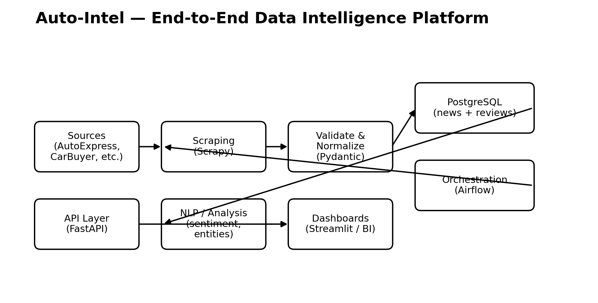
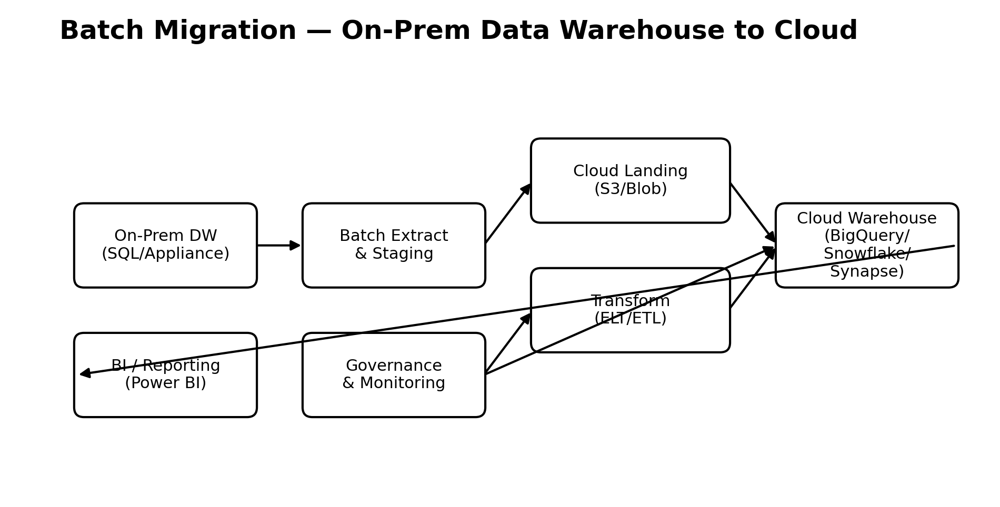

Architecture
Reference diagrams
These diagrams are included in the pitch deck and can be used in proposals.
Auto‑Intel Architecture
Cloud Migration Reference
Kafka Streaming Pipeline

Data Engineering & Data Science portfolio for both consulting clients and job applications. Focused on reliability, governance, and measurable outcomes.
Services
Design and build reliable data warehouses/lakes and analytics-ready datasets.
Phased migrations from on-prem to AWS/Azure/GCP with minimal downtime.
NDPA-aligned governance: classification, RBAC, audits, and risk controls.
Decision-ready dashboards and narrative insights using Power BI / Streamlit.
Case Studies
Designed a comprehensive NDPA-aligned governance model: classification, RBAC, auditing, and risk controls.
Phased migration strategy optimised for cost, performance, and minimal downtime.
End-to-end profiling, quality checks, and automated validation to raise trust in analytics.
Scraping → validation → orchestration → APIs → NLP analytics → dashboards for rapid insights.
Real-time ingestion and processing for timely reporting and operational analytics.
Structured property datasets for efficient storage, querying, and downstream analytics.
Retail Sales Integration Pipeline (AWS S3 & Airbyte): consolidated multi-source retail data into S3 using Airbyte to enable scalable BI and analytics.
Architecture
Tech Stack
I’m a results-driven Data Engineer and Data Scientist focused on building enterprise-grade data systems. I bridge technical execution with business strategy—delivering compliant governance, reliable pipelines, and decision-ready analytics.
Tip: for GitHub Pages, place this index.html at your repo root (or /docs) and commit the assets folder.
Contact
GitHub Pages can’t send form submissions by default, so this page uses a simple email link.
Email meReplace YOUR_EMAIL_HERE with your email address before publishing.